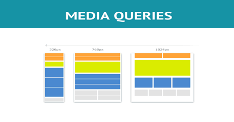
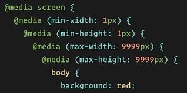
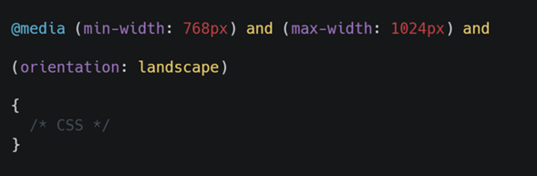

Media Queries
En el desarrollo web las media queries juegan un papel importante, ya que por medio se de estas se forman las bases de design responsive, lo cual se refiere a la adaptación de nuestra pagina web en los distintos dispositivos o pantallas
El inicio de las Media Queries
En 1994 se planteó implementar las media queries en la primera versión de CSS, esta se implemento en los navegadores en el año 2012 junto a la llegada de CSS3. Desde el inicio se buscaba hallar la manera de que el contenido creado en HTML se pudiera visualizar de forma correcta en las distintas pantallas con diferentes resoluciones, esto con el fin de trabajar en la perspectiva que tenía el usuario final o cliente, con la llegada de pantallas con mejores resoluciones y el uso de dispositivos antiguos por varios usuarios, lograron impulsar mas esa necesidad de adaptabilidad en las páginas. En el año 2012 con la llegada de las media queries y la estandarización de la misma, las paginas web lograron dicha adaptabilidad en diferentes tipos de dispositivos con diferentes resoluciones.
Tipos de medios
En CSS3 se puede agregar valores con el fin de elegir el tipo de medio al que se dirige la regla en una media query.
- All: Este valor se utiliza para todos los tipos de dispositivos.
- Print: Este valor se utiliza para las impresoras
- Screen: Este valor va dirigido Computadores, tablets, teléfonos móviles, entre otros.
- Speech: Este valor es para los lectores de pantalla, los cuales están dirigidos en su mayoría para personas con discapacidad visual.
Funciones de Medios
Las funciones de medios nos permiten usar las características en los distintos navegadores o dispositivos, a continuación, veremos algunas de estas características.
- Width: Nos ayuda con la anchura de la ventana de visualización.
- Heigth: Nos ayuda con la altura de la ventana de visualización.
- Orientation: Nos ayuda a orientar de la ventana de visualización.
- Resolution: Nos ayuda a definir densidad de píxeles del dispositivo de salida.
Ejemplo
Media Queries tipo screen usando funciones width y heigth.
funcion Orientación
